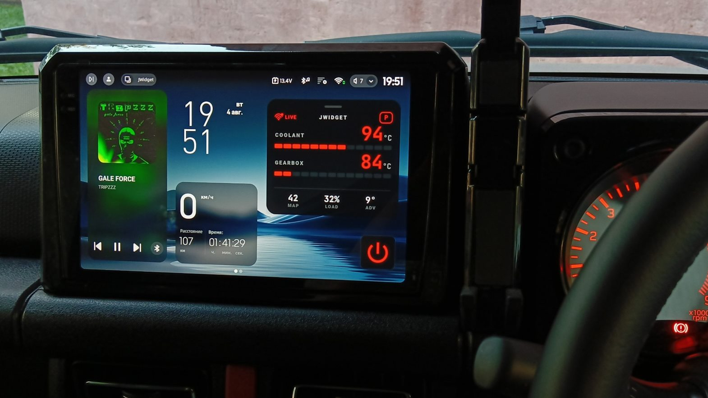
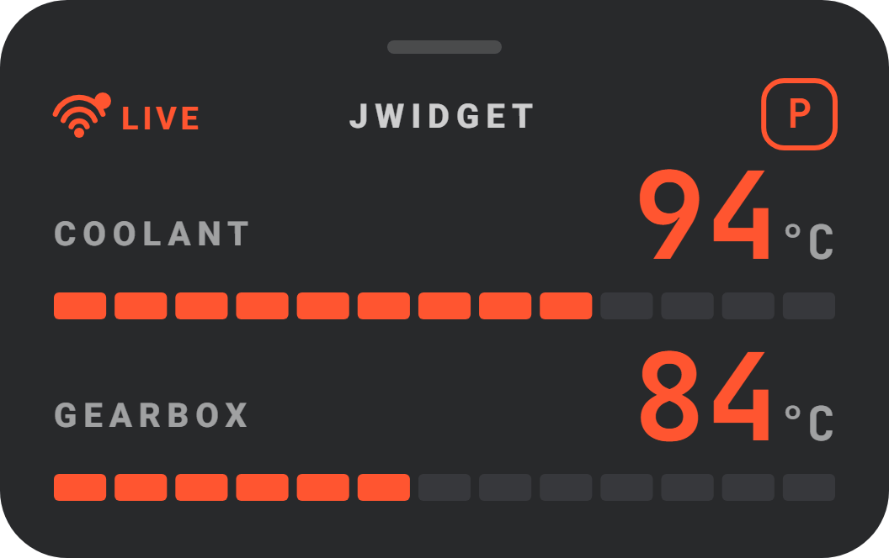
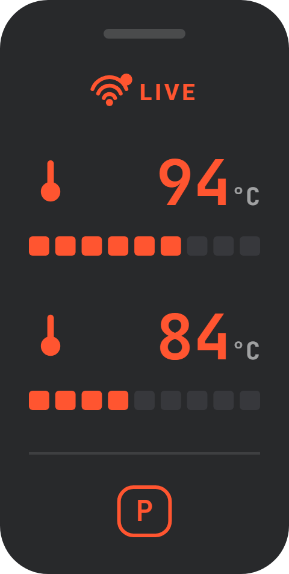
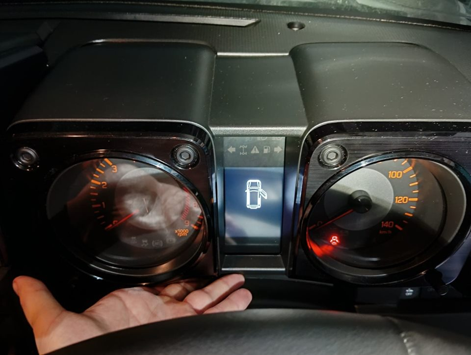
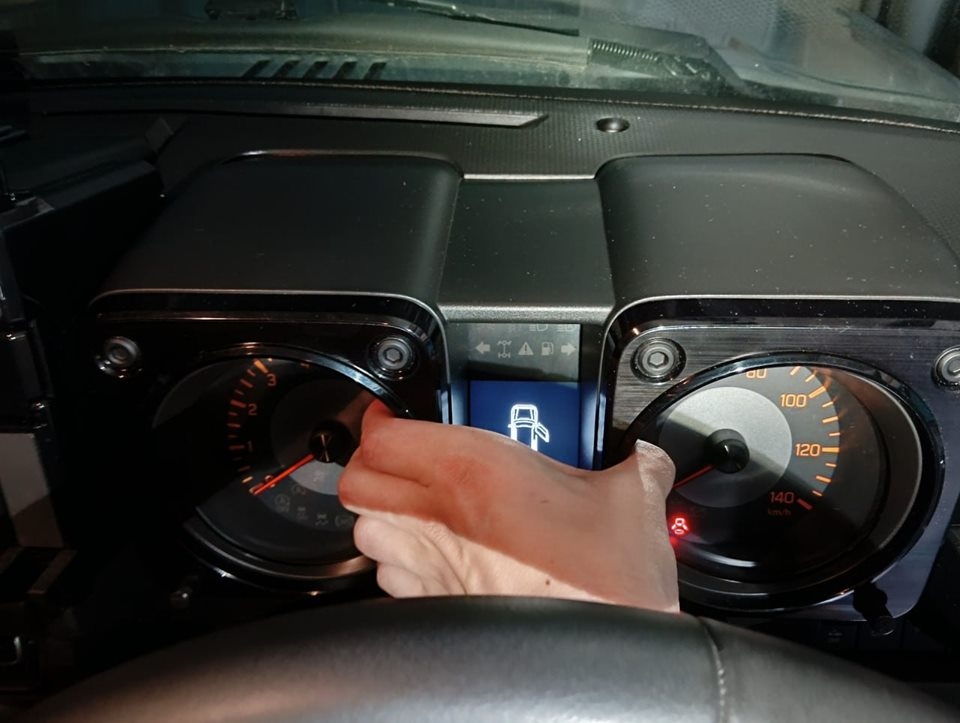

Pre-facelift
Automatic
23readings + tyres*
- Engine temperature
- Gearbox temperature, gear
- Tyre pressures*
For the Suzuki Jimny · JB64 · JB74 · JC74
JMonitor puts the engine and gearbox temperature on your Android head unit in degrees, warns you before it overheats and shows some twenty more readings of the car. It plugs in between factory connectors — no wire is cut.
Download the overviewPDF · 2.5 MB
Download the JWidget appAPK · 3.4 MB
You need an Android head unit: Android 8.0 or newer, with Wi-Fi.

The main thing
The Jimny has no temperature gauge — only a warning light, when it is already late. An automatic in sand or on a long climb is the same story. JWidget shows both temperatures as a number and a bar: the number turns yellow, then red as it heats up.
Gearbox temperature and the engaged gear — on cars with an automatic.


The card
Three card layouts. You choose what each position shows.


Readings
Any of them can go on the card. The Live parameters screen shows them all at once — together with the car’s switches.
Engine speed, load, ignition advance, throttle, accelerator pedal
Manifold pressure, barometric pressure, boost, intake air temperature
Engaged gear, four-wheel drive 4WD and low range 4L
Brake pressure and brake booster pressure
Fuel level, vehicle speed
The speed of every wheel, steering angle
The pressure in every tyre — pre-facelift cars with factory TPMS
Lights, indicators, doors, seatbelts, parking brake, A/C — 15 states
The set of readings depends on the car — see compatibility. What the car does not send, the app shows as a dash — never as a zero.
The Live parameters screen in the JWidget app
How it works
JMonitor sends nothing to the car’s bus. It neither reads nor clears fault codes.
The harness plugs in between factory connectors. The OBD port stays free.
The data on Wi-Fi is encrypted. Without the key from the card, it cannot be read.
The unit goes to sleep once the bus goes quiet, and wakes up by itself.
The firmware comes inside the app. If anything goes wrong, the unit goes back to the previous one by itself.
Every unit, before it ships.
Comparison
An ELM327 adapter and an OBD screen plug into the diagnostic port and query the car’s modules. JMonitor sits behind the instrument cluster and listens to the data the modules already exchange.
| Feature | JMonitor | ELM327 | OBD screen |
|---|---|---|---|
| The OBD port stays free | yes | no | no |
| Only listens, sends nothing to the car | yes | no | no |
| Nothing extra on the dashboard | yes | yes | no |
| Gearbox temperature with no setup | yes | no | not always |
| The Jimny’s 4WD, 4L and switches | yes | no | no |
| 2026 facelift: engine and gearbox temperature | yes | no | no |
The one thing it needs is an Android head unit: Android 8.0 or newer, with Wi-Fi.
Installation
No cutting and no soldering. It comes out the same way, and the car is stock again.
Before you start, disconnect the battery: take off the negative terminal.

1Take hold of the lower edge of the instrument cluster hood.

2Pull it towards you: it sits on clips, no tools needed.
 3
3
Plug the harness in between: the harness connector into the cluster, the factory plug into the harness, until they click.
Reconnect the battery and switch the ignition on: the cluster works as usual, and a Wi-Fi network “Jimny-XXXX” shows in the list. The unit recognises the model and the gearbox by itself.
Compatibility
The fourth-generation Suzuki Jimny: JB64, JB74, JC74 — automatic and manual, pre-facelift and facelift.
Pre-facelift
23readings + tyres*
Pre-facelift
16readings + tyres*
Facelift
16readings
Facelift
14readings
* On cars with factory tyre pressure monitoring (TPMS). The full list of readings by model is in the overview.
You need an Android head unit: Android 8.0 or newer, with Wi-Fi. The unit does not work with the factory radio.
Download
The JWidget app for the head unit, and four PDF guides in English, with pictures.
For an Android head unit: Android 8.0 or newer. It installs from an .apk file.
What it shows, how it works, the full list of readings by model.
Steps with photos: from the battery to the check.
Installing JWidget, the Wi-Fi link, the first start.
Every section and every setting, with pictures of the screens.

Kit and price
US$100Worldwide shipping by post
Orders and questions:
Questions
No. It needs a head unit with Android 8.0 or newer, with Wi-Fi.
Yes, JWidget installs on an Android phone too. But the unit is made for the head unit: a card over navigation, no phone in your hand.
No. Nothing goes into the OBD port; it stays free. JMonitor sits behind the instrument cluster, out of sight.
No. It only listens to the bus and sends nothing to it. It neither reads nor clears fault codes.
A manual car does not send a gearbox temperature, and the facelift does not send some of the engine readings. What the car does not send, the app shows as a dash.
If it has factory tyre pressure monitoring (TPMS) and is a pre-facelift car — yes.
The unit goes to sleep with the car, once the bus goes quiet.
English. The guides are in English and Russian, with pictures of the screens.
No, it installs from an .apk file. The file is on this page, under “The app and the guides”. New versions appear there too.
The unit goes back to its previous firmware by itself and works as before.
Any manufacturing defect: a free exchange or a full refund.
Yes: disconnect the battery, take the hood off, pull the harness out, plug the factory connector back in.
JWidget app — 2.2.9, 20 November 2026
JMonitor firmware — 2.2.2, it comes inside the app
New in 2.2.9:
New in 2.2.8, 16 November 2026: